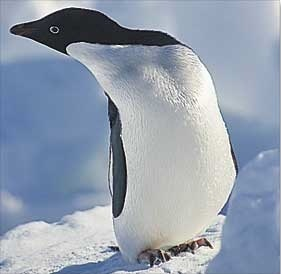

|  |
Adelie Penguin |
5.4 kg (m), 4.7 kg (f) |
Krill |
Antarctic |
In colonies in the open, use stones to line nest |
|
African Penguin |
3.3 kg (m), 3.0 kg (f) |
Small fish |
Southern Africa |
Burrow or under bushes/rocks |
|
Emperor Penguin |
36.7 kg (m), 28.4kg (f) |
fish and squid |
Antarctic |
Breed on sea ice in winter, egg carried on feet |
|
Erect-Crested Penguin |
5.2 kg (m), 5.1 kg (f) |
Krill and squid |
Sub-Antarctic Islands |
In colonies in the open |
|
Little Penguin |
1.2 kg (m), 1.0 kg (f) |
Small fish |
Australia |
Burrow, cave or under bushes |
|
Magellanic Penguin |
4.9 kg (m), 4.6 kg (f) |
Small fish |
South America |
Burrow or under bushes |
|
Rockhopper Penguin |
2.5 kg (m), 2.4 kg (f) |
Krill, fish and squid |
Subtropical convergence |
In colonies in the open |